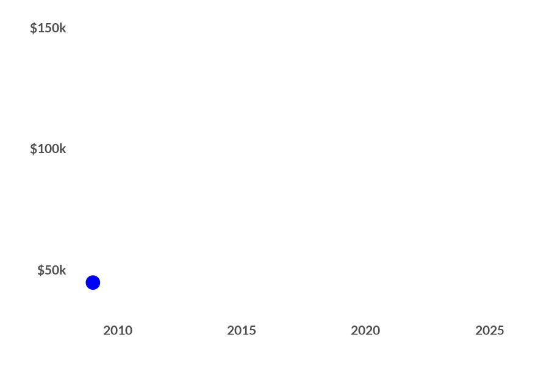

Notes: Average median income is calculated as the unweighted mean of the median household incomes of all census tracts served by Link. Census tracts are considered "served" if the tract boundaries overlap with a 0.5-mile radius of any Link station.
Data: 2010-2024 American Community Survey (ACS) 5-year estimates
GitHub Repository